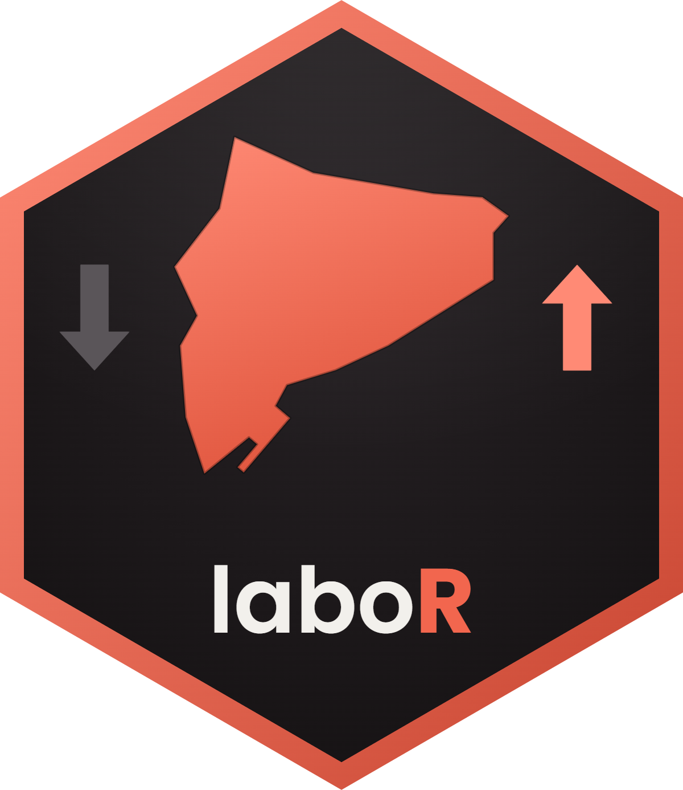

laboR: dades d'atur registrat i contractació de l'Observatori del Treball
Codi font:R/laboR-package.R
laboR-package.RdDescarrega les dades d'atur registrat, demandants d'ocupació i contractació laboral que publica l'Observatori del Treball i Model Productiu de la Generalitat de Catalunya, accedint a la seva API MicroStrategy.
Funcions principals
Atur registrat:
descarrega_atur_catalunya(),descarrega_atur_provincies(),descarrega_atur_comarques(),descarrega_atur_municipis()Contractació:
descarrega_contractacio_catalunya(),descarrega_contractacio_provincies(),descarrega_contractacio_comarques(),descarrega_contractacio_municipis()Llistes de referència:
obtenir_municipis(),obtenir_comarques(),obtenir_provincies(),llistar_mesos(),llistar_variables_atur(),llistar_variables_contractacio()
Secret estadístic
En municipis de menys de 20.000 habitants, les cel·les amb valors petits
(menys de 4) se suprimeixen per secret estadístic i el servidor les marca
amb "#". El paquet les converteix sistemàticament en NA, de manera que
les columnes de valors són sempre numèriques.
Autor
Mantenidor: Gerard Reverté Calvet gerardrc@gmail.com